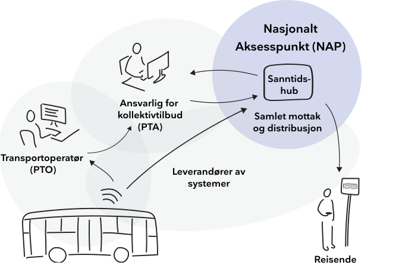
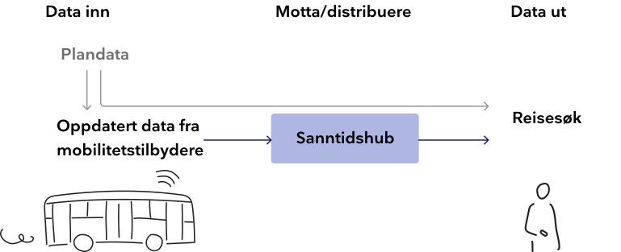
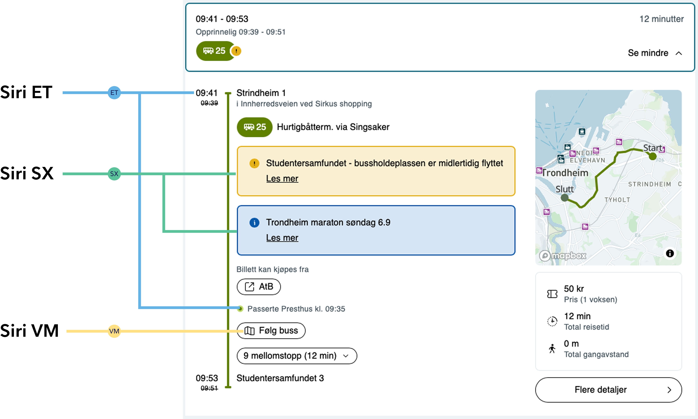
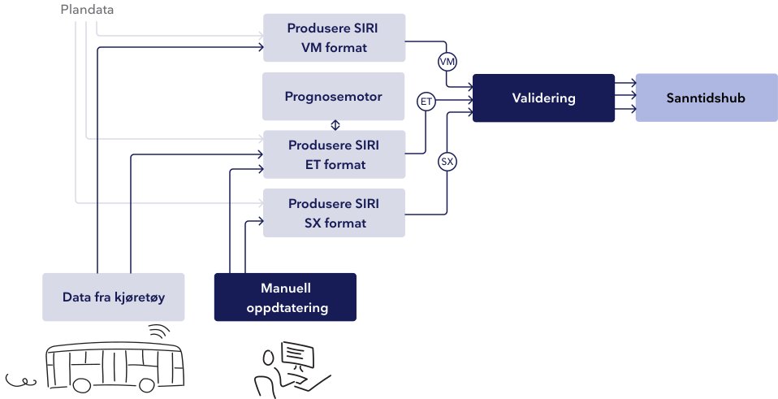
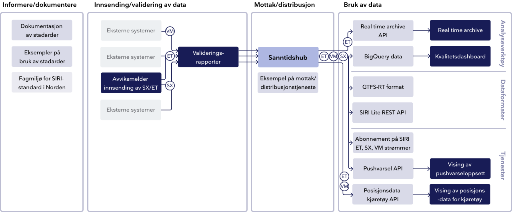
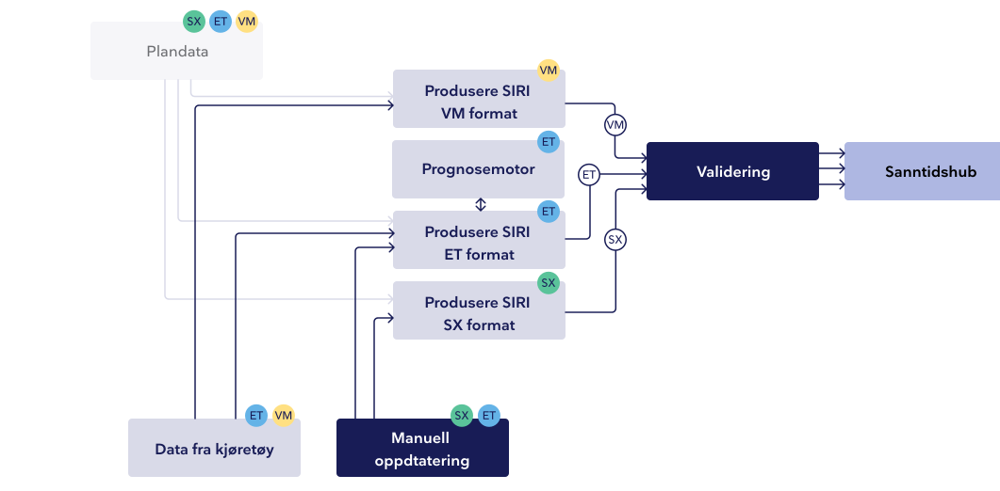

Sanntid
Sanntidsdata gir reisende et bilde av nå-situasjonen gjennom oppdatert reiseinformasjon i reisesøk og på informasjonstavler. Det er også verdifull innsikt for mobilitetstilbydere og operatører som kan tilpasse, effektivisere og videreutvikle reisetilbudet basert på hva som faktisk hendte.
I Norge skal alle kollektivtilbydere sende inn sanntidsdata til Nasjonalt Aksesspunkt (NAP), som igjen tilgjengeliggjør dataen åpent for bruk. Les mer om NAP her.
Entur er utnevnt av JDIR til å levere funksjonen NAP, og tilbyr ulike tjenester som til sammen tilrettelegger for innsending, distribusjon og analyse av kollektivdata, som også omfatter sanntidsdata.

Hva er sanntid?
Når en reisende søker etter en reise frem i tid, vil de se alle planlagte avganger. Dette er plandata, med informasjon om stoppesteder, ruteoppsett og planlagte avgangstider, som gjerne legges inn en stund i forveien. Når selve reisen nærmer seg, kan det imidlertid oppstå uforutsette hendelser som fører til endringer eller forsinkelser. Da er det sanntidsdata som kan gi den reisende oppdatert informasjon om den planlagte avgangen. Sanntidsinformasjon kan vises både som meldinger til den reisende, som forsinkelser i avgangstider, sporendringer eller kanselleringer. Det kan også brukes til å vise et oppdatert kart der reisende kan se nøyaktig hvor transportmiddelet befinner seg eller om det er mange folk på bussen akkurat nå.
Hvordan fungerer det?
For å kunne vise denne informasjonen til de reisende, må det sendes inn data fra transportmiddelet eller fra noen som skriver en manuell avviksmelding og koble dette mot riktig planlagt avgang, slik at det blir synlig i reisesøket eller på en informasjonstavle. For at dette skal fungere på tvers av alle de ulike aktørene som kjører busser, skriver avviksmeldinger eller tilbyr reiseinformasjon, er det etablert noen standardformater som brukes i Norge i dag.

Sanntidsdata blir koblet mot planlagte avganger i plandata, slik at den reisende kan gjøre reisesøk i planlagte avganger, nå også med relevant sanntidsinformasjon.
Les mer om hvordan det fungerer
Standardformater
Formatet er basert på Transmodel - en europeisk modell for konsepter og datastruktur innen offentlig mobilitet. Les om Transmodel her.
Formatet som brukes for sanntid heter SIRI, som består av flere ulike protokoller egnet for sending av ulike typer data. Entur har vært med på å etablere den nordiske profilen av SIRI, i samarbeid med JDIR, og har fått ansvaret for å operasjonalisere den i Norge. Her kan du lese om SIRI nordic profile.
I dag brukes protokollene SIRI ET, SIRI VM og SIRI SX i Norge.

Data inn fra mobilitetstilbydere
For å sende inn data i henhold til standarden må mobilitetstilbydere bruke tjenester som kan samle inn dataene, og produsere dette i SIRI formatet. De ulike formatene krever ulike tjenester, og disse kan leveres av én eller flere leverandører, gjennom de ansvarlige for kollektivtilbudet (PTA) eller via en eller flere operatører (PTO). Leverandøren av disse tjenestene kan være en tredjepart, kollektivselskapet selv eller Entur.

Validering
For å sikre at innkommende data er korrekt og gir riktig reiseinformasjon til de reisende, må dataen valideres før den sendes videre. (Les mer om validering her.) Inneholder dataen store feil som kan gi dirkete misvisende informasjon til reisende, kan den stoppes fra å sendes videre til reisesøket. Mindre feil i dataen vil ikke stoppes, men kan flagges i valideringsrapporter, som et godt grunnlag for å forbedre dataen.
Samling og distribusjon av data - sanntidshuben
Sanntidshuben er en del av Nasjonalt aksesspunkt (NAP), og samler inn SIRI SX-, VM- og ET-strømmer fra alle kollektivaktører som sender inn denne dataen i Norge. Mer dokumentasjon om hvordan tjenesten fungerer og eksempler på bruk, kan leses her.
All rådata i sanntidshuben er tilgjengelig for de som ønsker å bruke den. Det er mulig å hente ut i dag i ulike formater - fra å abonnere direkte på SIRI-strømmene, til mer lettvektsformat (REST API), GTFS-RT format eller som data i BigQuery. Les mer om dette her.
Data ut til konsumenter
Ved å bruke ett av disse formatene kan dataen brukes til å bygge ulike typer tjenester; rettet mot reisende og oppdatert reiseinformasjon, for å gi kollektivtilbydere bedre oversikt når det oppstår avvik, eller for å analysere og feilsøke i etterkant. Les mer om de ulike formatene Entur tilbyr her.
Enturs rolle
Ansvaret for innhenting, forvaltning og formidling av nasjonale rutedata, som også omfatter sanntidsdata, er delegert til Jernbanedirektoratet og Entur. Dette gir Entur en sentral rolle i å samle inn og distribuere åpne data i sektoren. Samtidig er Entur en pådriver for videreutvikling av den nordiske SIRI-profilen, og deltar aktivt i samarbeid på tvers av nordiske land og i Europa.
Hva tilbyr Entur?

Informere og dokumentere
I håndbok N801 er det beskrevet hva kollektivtilbydere må levere inn av data, og hvilken rolle Entur har i Norge. Entur har også en aktiv rolle i internasjonalt samarbeid om videreutvikling av SIRI-protokollene, og har bidratt mye til den nordiske profilen.
Praktiske eksempler på hvordan meldingene skal se ut finnes på GitHub. (Les mer under Mottak og distribusjon)
Innsending av data
Entur tilbyr i dag et verktøy for innsending av SX-data og enkelte meldinger i ET-format. Grensesnittet lar brukeren knytte tekstlige beskjeder til avganger, stoppesteder eller linjer for å informere reisende ved avvik, samt legge inn kanselleringer og ekstraturer.
For å kunne benytte tjenesten, må det etableres en avtale med Entur og opprettes en bruker knyttet til organisasjonen. For å bli partner med Entur, les mer på entur.no eller ta kontakt på kollektivdata@entur.org.
Validering
Valideringen sjekker formatet på meldingene og noe logikk, for å vurdere om dette er data som kan leses korrekt og vil vise riktig informasjon til de reisende. Selve grensesnittet viser bare hva som vil gå gjennom og hva som vil feile, og feil blir ikke forkastet her. Det som er kategorisert som alvorlige feil, blir forkastet i selve sanntidstjenesten eller i reisesøkmotoren (OTP). Valideringsrapportene er åpne for alle, og alle som sender inn SX-, VM- og/eller ET-meldinger kan bruke verktøyet til å se om dataene de sender inn feiler eller ikke. Hva de ulike feilmeldingene betyr, og hvordan man søker opp sine data er beskrevet i brukerveiledningen.
Mottak og distribusjon
Sanntidshuben tar imot rundt 70 strømmer med ET-, VM- og SX-meldinger fra aktører i Norge, og gjør dem tilgjengelig på tvers av alle som sender inn. Tjenesten er et åpen kildekode-prosjekt, Anshar, tilgjengelig på GitHub sammen med dokumentasjon på hvordan den mottar og sender data i henhold til SIRI-protokollen. På GitHub finnes det også et eksempeloppsett av en applikasjon som viser i praksis hvordan kommunikasjon mellom tjenesten og innsender kan se ut, samt eksempler på meldinger i de ulike formatene.
Hente ut data
All data er åpent tilgjengelig fra sanntidshuben, og Entur tilbyr ulike formater for å konsumere den. Det er mulig å abonnere direkte på ET-, VM- og SX-strømmene i SIRI-format. Det er disse strømmene som brukes videre i reisesøket, sammen med plandata og andre datakilder. Det tilbys også et SIRI Lite REST API, for periodisk uthenting av data. GTFS-RT er formatet blant annet Google Maps bruker, og er et lettvektsformat med mindre rik data. Dataen kan også lastes ned eller brukes direkte fra BigQuery til for eksempel analyseformål. Hvordan ta i bruk disse formatene er beskrevet på Enturs utviklerportal eller dataportal.
Spesifikke tjenester bygget på sanntidsdata
Entur tilbyr et API som kan sende pushvarsler på gitte strekninger til reisende i sin valgte reiseapp. APIet er dokumentert på utviklerportalen, og det er også bygget et grensesnitt som viser hva abonnenter vil se.
For enklere bruk av VM- og ET-data om kjøretøyposisjoner, fyllingsgrad og estimerte ankomsttider er det utviklet et eget API som lar deg vise sanntidsdata direkte til en sluttbruker. Det finnes også et grensesnitt som viser hvordan denne dataen kan brukes i praksis.
Analysere data
Real Time Archive er en tjeneste som gir et bilde av hvilke data som faktisk ble sendt fra sanntidshuben til reisesøkmotoren. Tjenesten tilbys både som et API og som et grensesnitt. Den viser kun ET-meldinger, men det er mulig å søke opp avganger fra alle kollektivtilbydere, og se hver enkelt ET-melding som ble sendt inn til sanntidshuben. Dette gjør det enklere å gjenskape situasjonen slik den var på et gitt tidspunkt, og kan hjelpe aktørene å forstå hva som ble vist til de reisende, og hva som kan ha gått galt hvis reisende opplever å få feil informasjon.
Kvalitetsdashbordet er bygget på historiske data fra BigQuery og viser et overordnet bilde av kvaliteten på sanntidsdata fra de ulike aktørene, for hver av de ulike strømmene. Det er også mulig å gå mer i detalj og se på ulike deler av dataen i hver enkelt strøm. Dashbordet kan også brukes til å måle effekten av eventuelle tiltak for å bedre kvaliteten.
Det finnes flere dashboard å utforske på dataportalen, som du finner her.
Mobilitetstilbyderes rolle
For å levere inn og bruke sanntidsdata er det ofte involvert både de som er ansvarlige for kollektivtilbudet regionalt, transportoperatører og ulike systemleverandører. Det finnes flere ulike modeller for hvordan dette samarbeidet er strukturert, og det hender at samme organisasjon er både tilbyder og operatør, eller at tilbyder også har utviklet egne leverandørløsninger.
Ansvarlige for kollektivtilbudet – PTA
Med ansvarlige for kollektivtilbudet menes de som i henhold til håndbok N801 har løyve på vegne av staten til å tilby rutegående persontransport. I Transmodel-standarden som SIRI er en del av, kalles denne rollen gjerne PTA – Public Transport Authority.
PTA er ansvarlig for å sende inn sanntidsdata for rutene de tilbyr, og for å sikre kommunikasjon ut til de reisende – gjerne gjennom en app, informasjonstavler eller kundesenter. Sanntidsinformasjon kan også gi PTA en bedre forståelse av situasjonen når det oppstår avvik og det er behov for å følge opp de reisende med oppdatert informasjon.
PTA kan også bruke historiske sanntidsdata til å ettergå hva som faktisk ble levert av operatør, hva som skjedde på et gitt tidspunkt i forbindelse med refusjonskrav fra kunder, og til å planlegge og tilpasse rutetilbudet fremover.
Operatører – PTO
Operatører blir i Transmodel-standarden, som SIRI er en del av, ofte referert til som PTO – Public Transport Operator.
PTO inngår gjerne avtaler – eller anbud – med en PTA om å kjøre ruter i et område på vegne av PTA. Det er fortsatt PTA som er ansvarlig for å sende inn sanntidsdata, men ettersom data for ET og VM kommer fra kjøretøyene, er PTO også involvert i innsendingen. I noen tilfeller sendes dataen direkte fra PTO til sanntidshuben, andre ganger via PTA. Sanntidsinformasjon kan gi et oppdatert bilde av situasjonen ved avvik, og gjør det enklere å dele informasjon med de reisende om forsinkelser, alternativ transport eller kanselleringer.
PTO kan også bruke historisk sanntidsdata til å følge opp kontrakter med PTA, samt til analyse og videreutvikling av tilbudet.
Leverandører
Både PTA og PTO bruker gjerne ulike systemleverandører for å sende inn og hente ut data. De fleste har ulike løsninger for hvilke leverandører som gjør hvilke oppgaver, og noen PTAer har også bygd egne løsninger.
Hvordan komme i gang med å sende inn sanntidsdata?

VM: Krever en sender som sier hvor kjøretøyet befinner seg, en måte å koble dette til planlagt avgang, og et system som kan omforme denne dataen til SIRI VM-formatet. Dette kan leveres av én eller flere leverandører.
ET: Krever også en sender som sier hvor kjøretøyet befinner seg og kobling mot plandata, en prognosemotor som kan estimere beregnet ankomst i forhold til rutetid, og et system som kan omforme dette til SIRI ET-formatet. Dette kan leveres av én eller flere leverandører.
SX: Krever et grensesnitt hvor det kan skrives inn en tekstlig melding som kan kobles mot en avgang eller stoppested i plandata, og et system som kan omforme dette til SIRI SX-formatet. Dette kan leveres av én eller flere leverandører.
Hvordan øke kvaliteten på informasjon ut til de reisende?
Når strømmene er på plass, og sanntidsdata kan sendes ut til de reisende gjennom reisesøket, er det en kontinuerlig jobb å sikre kvaliteten på dataen for å gi et mest mulig presist bilde av situasjonen til de reisende. Det er også relevant å ha så korrekt data som mulig som et solid grunnlag for å videreutvikle og tilpasse tilbudet sitt.
Enkelte feilkilder gjør at sanntidsdata ikke vises i det hele tatt til de reisende, mens det i andre tilfeller blir liggende estimater eller beskjeder på en avgang som ikke lenger er gyldige.
Eksempler på mulige årsaker til feil
Mottar ikke sanntid i det hele tatt
-
Sanntiden blir ikke koblet mot en planlagt avgang, av ulike
årsaker:
- Turen blir ikke startet i kjøretøy
- Feil tur blir startet i kjøretøy
- Plandata mangler for turen
- Plandata og sanntidsdata er ikke synkronisert og det oppstår avvik i datagrunnlaget
- Dataen feiler et sted mellom kjøretøy og system, og blir ikke sendt til sanntidshuben
Mottar ikke oppdateringer i sanntid - eldre estimater eller beskjeder blir stående
-
Kritisk feil i data - én eller flere meldinger blir forkastet og
vises ikke i reisseøket
- Mangler oppdateringer om estimert ankomst - mindre presist
- Mangler oppdateringer om andre faktorer som påvirker reisen - f.eks kanselleringer
- Tekstlige beskjeder er ikke fjernet, selv om de ikke lengre er relevante.
Feilsøking
Valideringstjenesten (les mer om validering her) kan brukes til å utforske hvilke kritiske feil som gjør at dataen aldri blir tatt med i reisesøket, og gir også informasjon om mindre alvorlige feil som også kan utbedres. Dette kan være et naturlig sted å starte feilsøking hvis enkelte data ikke blir tatt med inn i reisesøk.
Real Time Archive (les mer om analyseverktøyene her) viser en kopi av dataen som sendes til Open Trip Planner, som sammen med plandata er grunnlaget for et reisesøk. Dette kan være et fint sted å feilsøke i etterkant for å forstå hvilken informasjon som ble delt med de reisende. Det kan være enklere å forstå hvilke konsekvenser feil i innsending av data kan få for de reisende i praksis. Foreløpig viser denne tjenesten kun ET-data, ikke SX- og VM-data.
Kvalitetsrapport
Kvalitetsdashboardet (les mer her) gir en god oversikt over kvaliteten på data som er sendt inn, og hvor korrekt reiseinformasjon den gir. Den kan filtreres på de ulike strømmene, og kan være et godt utgangspunkt for å forstå hva som påvirker den overordnede kvaliteten, og hvilke områder det kan være lurt å prioritere. Det kan også brukes til å måle over tid om tiltak faktisk fører til økt kvalitet.
Dokumentasjon og tjenester
Dette er en enkel oversikt over all dokumentasjon og tilgjengelige tjenester innen sanntid som Entur leverer. For å forstå mer om hva tjenestene gjør, les mer under Hva tilbyr Entur.